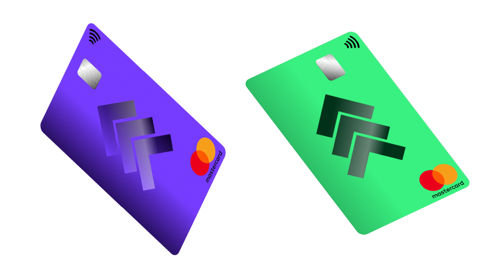
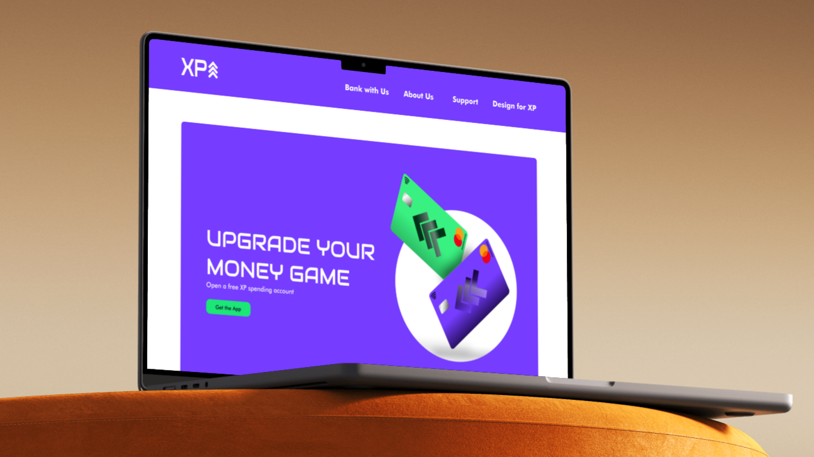

XP Bank

Summary Of Project
I wanted to design a bank that felt approachable and supportive for first-time and early-career users who often feel let down by both traditional and modern banks. By looking at Trustpilot reviews of Nationwide and Monzo, I consistently identified the same issues: long waiting times, overcomplicated verification, and a lack of effective support when something went wrong.
Read this project's notes on Notion ↗Project Specifications
-
The time it took for this project was 9 – 12 Weeks.
-
Software used for this project: Figma, Blender, and After Effects.
-
This was a branding project that created an identity for a modern bank.
-
The target audience was 16–25 year olds.
The Brief

We were tasked with creating a commercial bank brand aimed at 16–25-year-olds. We could either rebrand an existing bank or create a new one.
I chose to build a new brand from the ground up so it could be shaped entirely around the needs, behaviours, and expectations of the chosen age group (16-25).
Research

I began by creating user personas that represented both the younger and older ends of the 16–25 age range, created through my research. These personas helped define XP Bank’s five core values:
- Human rights: fairness, inclusion, no discrimination
- Responsible banking: helping users save, invest and grow
- Round-the-clock support: reliable customer service
- Strong security: proactive scam prevention
- Innovation & feedback: the bank evolves through user input
Ideation


Using real user pain points to shape the brand identity, I realised that users struggle most during moments of stress, such as scams, locked accounts, or unexpected issues. In response, I prioritised visible security actions, simplified user flows, and created a dedicated help area to make the experience feel more reassuring and less intimidating.
Initially, I wanted a cyberpunk-inspired UI influenced by my interest in Cyberpunk 2077 and Blade Runner 2049. However, through critique and reflection, it became clear that this approach was too niche and risked harming accessibility. I refined the visual direction into a more restrained, brutalist style that retained personality while significantly improving clarity and usability.
Development




This project ran for approximately 9–12 weeks (February–May 2025) and covered a wide scope, including brand guidelines, mobile app screens, and a marketing landing page. I primarily worked in Figma, with After Effects and Blender used for motion work.
Wanting to push the project further, I looked at professional examples such as Wise’s design system. This encouraged me to move beyond a static PDF and create a fully interactive design system website, allowing me to demonstrate how the brand, components, and patterns scale consistently across different contexts.
Final Product
The final outcome included a 55-page brand guideline, a structured component library, 11 mobile app screens, a multi-page landing website, and a fully prototyped design system.
Below is the interactive Figma Prototype of all of my deliverables:
Reflection
This project significantly changed how I approach design. If I were to develop it further, I would conduct structured usability testing and a full UX audit to refine accessibility, interaction accuracy, and edge cases. While feedback initially challenged my design direction, it ultimately helped me grow and respond more confidently to critique. Most importantly, I learnt how to embed values into design decisions, prioritise real user problems over purely visual ideas, and adapt my work when feedback leads to a better outcome.